Lote Triko, Etol Fantezi İplik'in bilgi birikimiyle kadın, erkek ve çocuk triko üretir. Kataloğumuz ipliğe göre düzenlenmiştir: soldan bir iplik seçin, o iplikten üretilen tüm panelleri gauge ve kompozisyon bilgisiyle görün.
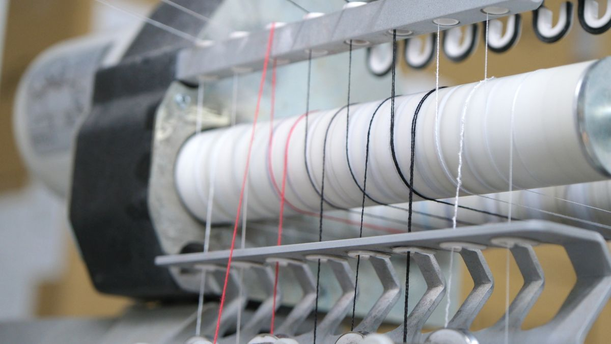
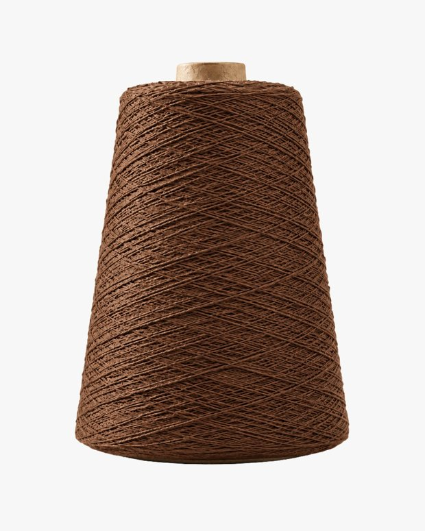
Her panel bir iplikten üretilir. Arşiv de bu mantıkla kurulmuştur — önce iplik, sonra o iplikten çıkan ürünler.
Sol kolonda tüm iplikler koni görseli, numarası ve panel sayısıyla listelenir.
Seçtiğiniz ipliğin kompozisyonu, renk varyantları ve o iplikten üretilen tüm paneller açılır.
Panele tıklayın: ART kodu, gauge, teknik, desen, sezon ve kategori bilgisi tek sayfada.
8.8 Nm · %39 Akrilik, %29 Geri Dönüştürülmüş Polyester, %14 Polyester, %9 Poliamid, %5 Yün, %4 Elastan. 3GG ile 7GG arası panellerde kullanılır.
İstanbul ve Bursa'daki tesislerimizde aylık yaklaşık 100.000 adet üretim kapasitesine sahibiz. 50'den fazla makine parkuru ve kendi bünyemizde kalıp hazırlama odası bulunmaktadır.
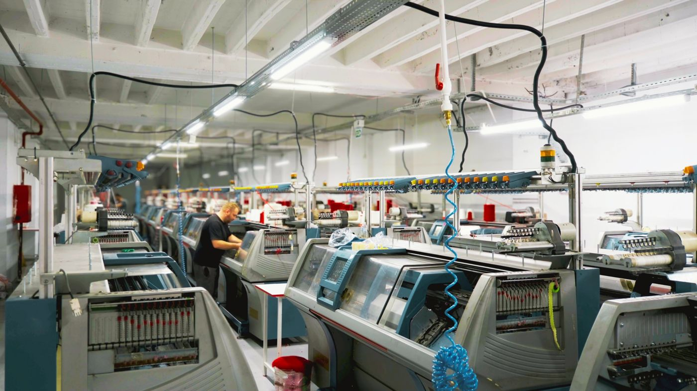
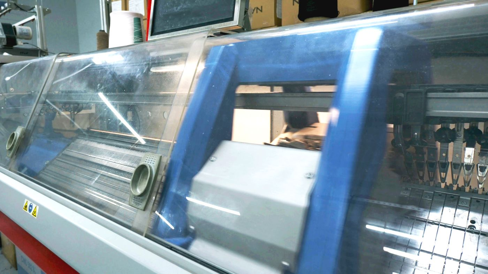
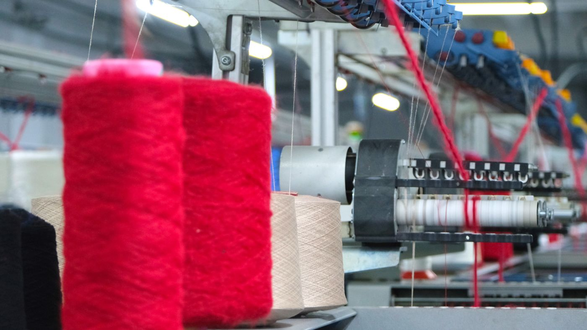
Yurt içinde Koton, Oxxo, Adil Işık ve Dilvin; ihracatta NafNaf, More&More, Etam, LPP, Anthropologie ve Dunnes Store gibi markalara üretim yapıyoruz.
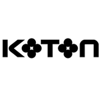
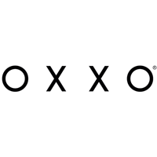
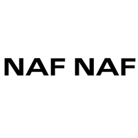
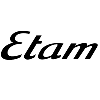
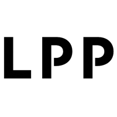
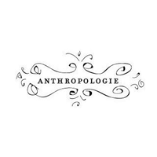
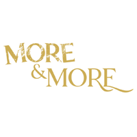
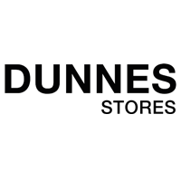
Etik ve sürdürülebilir üretimi destekleyen sertifikalarımız: OEKO-TEX, GOTS, OCS, GRS, RCS, Better Cotton, Sedex ve HIGG.
Nm, Ne, Nf, NeL, NeK, NeW, Tex, Dtex ve Denye birimlerini anında hesaplayın, birbirine dönüştürün. Üretim, iplik boyama ve kalite kontrol süreçlerinde zaman kazandırır.
Trend modelleri, renkleri ve kumaşları müşterilerimizle ortak belirleyerek kalıp hazırlamadan sevkiyata kadar tüm süreci yönetiyoruz.
Bize Ulaşın